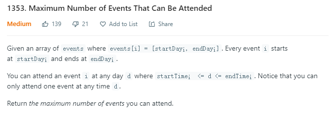
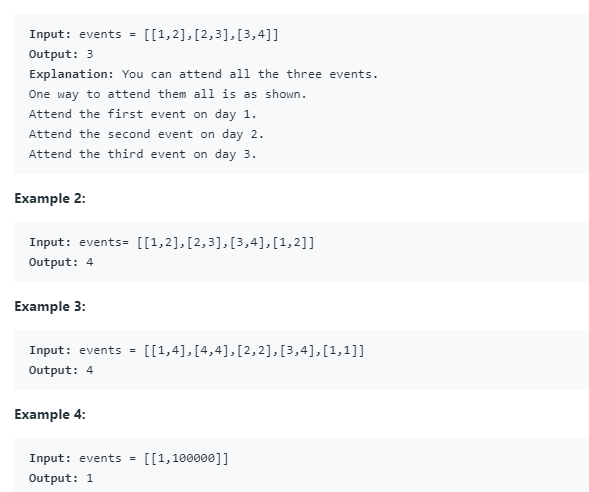

贪心算法
2020-02-17 / ClownW
可以应用贪心算法的一些特征：
- Choice of an element depends only on its immediate neighbours (wiggle sort).
- Answer is monotonically non-decreasing or non-increasing (sorting). This is also applicable for LIS for example.
- Anything that requires lexicographically largest or smallest of something.
- Anything where processing the input in sorted order will help.
- Anything where processing the input in forward or reverse (as given) will help.
- Anything which requires you to track the minimum or maximum of something (think of sliding window problems).
贪心算法两例
1.会议安排问题（一）
问题描述：有n个会议集合 A={1,2,3…n},这些会议都使用的是同一个会议室且在同一时间内最多只有一个会议可以使用该会议室，所以需要根据所有会议举办的时间进行协商。目标是尽可能选择更多的会议来使用资源。
给出每一个会议所占用的时间段，表示形式为 $[b_i,e_i)$ , 其中$b_i,e_i$是int型的整数来代表时间。
算法设计，包括策略与数据结构的选择,目前可以选择的贪心策略有：
- 选择最早开始时间且不与已安排会议重叠的会议
- 选择使用时间最短且不与已安排会议重叠的会议
- 选择最早结束时间且不与已安排会议重叠的会议
三个贪心策略中应该选择第三个，因为在这道题的情景之下，贪心的对象应该转化为使剩余时间的可安排时间段尽可能大，以便之后的会议能够有更多的时间来进行。
伪代码：
1 | //A存储的是成对信息 A[i]代表的是第i个会议 |
python代码：
1 | # -*- coding: utf-8 -*- |
2.会议安排问题（二）（leetcode #1353）
问题描述：


和上一题的改变在于可以在$s_i<=d<=e_i$的任意一天d参与这个event，贪心策略不变，排序方法依然按照结束时间的先后来进行排序，细节处理有所不同
代码：
1 | def maxEvents(events): |
参考文献：1.【算法分析】实验 1. 基于贪心的会议安排问题
本文链接：http://clownw.github.io/%E8%B4%AA%E5%BF%83%E7%AE%97%E6%B3%95/